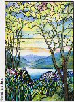

メニュー画面に戻る
メニュー画面に戻る
 画像を見る
画像を見る
 ショッピングカートを利用する
ショッピングカートを利用するLIST 2007/09
＜略号＞
BK=切手帳、S/S=小型シート、(シ)=シール式、CEPT=「EUROPA」シリーズ、□=無目打
( )内の数字は、種類の数
全体に取り消し線のあるものは、売り切れです。(2015.01.22)
品番のみに取り消し線があるものは、入荷待ちです。
青文字の品番は、再入荷（在庫僅）です。
最近売り切れの時期が早まっております。
ご注文はおはやめにどうぞ。
★ 恐れ入りますが1000円未満のご注文はお受けできません ★
当店の価格はすべて【税込】です。

MW 8「ティファニー ステンドガラス」から
| 品番 | 品名 | 単価（円） |
|---|---|---|
| ＭＷ １ | 国連 世界遺産 南米 (6) | 1320 |
| ＭＷ ４ | 国連 普通 ＮＹ 90c (1) | 210 |
| ＭＷ ５ | アメリカ 漫画のヒーロー20連 （シ） | 1950 |
| ＭＷ ６ | アメリカ パープルハート勲章2007 （シ） | 100 |
| ＭＷ ７ | アメリカ 昔の高速ボート４連 （シ） | 375 |
| ＭＷ ８ | アメリカ ティファニーステンドガラス （シ）ＢＫ | 1875 |
| ＭＷ ９ | アメリカ ティファニーステンドガラス ＢＫ単（シ） | 100 |
| ＭＷ１０ | アメリカ ハート 41c 平ＢＫ（シ） | 1875 |
| ＭＷ１１ | アメリカ ハート 41c ＢＫ単（シ） | 100 |
| ＭＷ１２ | アメリカ ハート 58c （シ） | 135 |
| ＭＷ１３ | アメリカ 公用コイル 41c (1) | 100 |
| ＭＷ１４ | アメリカ 公用コイル 41c ペア | 200 |
| ＭＷ１５ | アメリカ 愛国旗コイル版別(2)（シ） | 70 |
| ＭＷ１６ | アメリカ 愛国旗コイル版別 ペア(2) （シ） | 140 |
| ＭＷ１７ | マーシャル 宇宙時代50年 10連 | 920 |
| ＭＷ１８ | マーシャル 新普通 熱帯魚 (4) | 405 |
| ＭＷ１９ | マーシャル スカウト100年 田連 | 370 |
| ＭＷ２０ | ミクロネシア ローマ法王 (1) | 120 |
| ＭＷ２１ | ミクロネシア 平和軍40年４連 S/S | 760 |
| ＭＷ２２ | パラオ ローマ法王 (1) | 100 |
| ＭＷ２３ | パラオ ダイアナ妃 S/S (2) | 1180 |
| ＭＷ２４ | オーランド 移民 (1) | 240 |
| ＭＷ２５ | オーランド 現代工芸 ＢＫから３連 | 635 |
| ＭＷ２６ | アンドラ（スペ) CEPT 2007 スカウト (1) | 200 |
| ＭＷ２７ | オーストラリア 市場の人と食品 ５連 | 470 |
| ＭＷ２８ | オーストラリア 市場の人と食品 （シ）(5) | 470 |
| ＭＷ２９ | オーストラリア シドニー切手展加刷 S/S | 735 |
| ＭＷ３０ | オーストラリア 現代建築 (4)＋S/S | 1695 |
| ＭＷ３２ | オーストリア 作曲家キーンツル 150年 (1) | 200 |
| ＭＷ３３ | ボスニア（イス） 花 (1) | 120 |
| ＭＷ３４ | ボスニア（イス） 牛、ロバ (2) | 200 |
| ＭＷ３６ | ブルガリア CEPT 2007 スカウト２連 | 460 |
| ＭＷ３７ | カナダ 大酋長メンバトウ 凹(1) | 90 |
| ＭＷ３８ | カナダ ジャスパー国立公園 （シ）ＢＫ | 900 |
| ＭＷ３９ | カナダ ジャスパー国立公園 （シ）ＢＫ単片 | 90 |
| ＭＷ４０ | カナダ スカウト100年 （シ）ＢＫ | 720 |
| ＭＷ４１ | カナダ スカウト100年 （シ）ＢＫ単片 | 90 |
| ＭＷ４２ | 中国 切手収集連合会 S/S | 210 |
| ＭＷ４３ | 台湾 昔の食器 (4) | 265 |
| ＭＷ４４ | 台湾 普通 蘭の花［2］ (4) | 345 |
| ＭＷ４６ | 台湾 戒厳解除20年 (1) | 90 |
| ＭＷ４７ | クロアチア CEPT 2007 スカウト ２連 | 320 |
| ＭＷ５０ | キプロス CEPT 2007 スカウト 金箔マーク ＢＫから縦２連 | 325 |
| ＭＷ５１ | 北キプロス CEPT 2007 スカウト (2)＋□S/S | 650 |
| ＭＷ５２ | エストニア 紋章 続編 35c （シ）(1) | 100 |
| ＭＷ５３ | エストニア ピリタ修道院あと (1) | 100 |
| ＭＷ５４ | エストニア 国外追放の犠牲者 S/S | 140 |
| ＭＷ５５ | フェロー 聖書訳者３連 S/S | 640 |
| ＭＷ５６ | フェロー 鶏、アヒル、カモ (3) | 2090 |
| ＭＷ５７ | フィジー 南太平洋の鳥 (4) | 650 |
| ＭＷ５８ | フランス 会計検査院200年 凹(1) | 150 |
| ＭＷ５９ | フランス 評論家ロンドル 凹(1) | 150 |
| ＭＷ６０ | フランス ローマ協定50年 (1) | 150 |
| ＭＷ６１ | フランス 観光 リモージュ 凹(1) | 150 |
| ＭＷ６２ | フランス ボーバン領主と城 凹(1) | 150 |
| ＭＷ６３ | フランス 世界ラグビー (1) | 150 |
| ＭＷ６４ | フランス 国際ヨット連盟 長大（1） | 230 |
| ＭＷ６５ | フランス 観光 アルカション (1) | 150 |
| ＭＷ６６ | ドイツ 世界遺産 大聖堂 (2) | 445 |
| ＭＷ６８ | ドイツ ハンバッハ祭 （シ）(1) | 480 |
| ＭＷ６９ | ドイツ バレンティンの漫画 (1) | 150 |
| ＭＷ７０ | ドイツ 映画俳優 クリンガー (1) | 180 |
| ＭＷ７１ | ドイツ 絵本いたずらカラス S/S | 1390 |
| ＭＷ７２ | ジブラルター CEPT 2007 スカウト (4) | 840 |
| ＭＷ７３ | イギリス CEPT 2007 スカウト (6) | 1430 |
| ＭＷ７４ | ギリシャ CEPT 2007 スカウト ２連 | 1080 |
| ＭＷ７６ | 香港 バンコク切手展 S/S | 285 |
| ＭＷ７７ | アイルランド 国歌 (1) | 170 |
| ＭＷ７８ | アイルランド 司法学院 (1) | 170 |
| ＭＷ７９ | アイルランド 登記法300年 (1) | 240 |
| ＭＷ８０ | イスラエル ボランティア団体 (1) | 90 |
| ＭＷ８１ | イスラエル 世界遺産 (3) | 735 |
| ＭＷ８２ | イスラエル 刑務官 (1) | 140 |
| ＭＷ８３ | イスラエル ダンス ４連 | 470 |
| ＭＷ８４ | イタリア CEPT 2007 スカウト (2)＋S/S | 910 |
| ＭＷ８５ | イタリア チネチッタ映画スタジオ (1) | 240 |
| ＭＷ８６ | ジャージー 普通 花［3］ (8)＋S/S | 3995 |
| ＭＷ８７ | ジャージー 夏の花 (6) | 1280 |
| ＭＷ８８ | カザフスタン オペラ ○型 (1) | 240 |
| ＭＷ８９ | 韓国 ハーグ密使100年 凹(1) | 60 |
| ＭＷ９０ | 韓国 趣味週間△型 ２連＋S/S | 240 |
| ＭＷ９１ | 韓国 高句麗シリーズ［3］ | 1600 |
| ＭＷ９３ | ラトビア 携帯電話 気球 (1) | 90 |
| ＭＷ９５ | ラトビア 宮殿シリーズ (1) | 100 |
| ＭＷ９６ | リヒテン 自国の技術革新 (3) | 920 |
| ＭＷ９７ | リヒテン 田園風景 (3) | 770 |
| ＭＷ９８ | リヒテン 稀少甲虫類 (3) | 525 |
| ＭＷ９９ | リトアニア 1000年史シリーズ S/S | 980 |
| ＭＷ１００ | ルクセンブルグ CEPT 2007 スカウト (2) | 330 |
| ＭＷ１０１ | マカオ スカウト100年 (5)＋S/S | 680 |
| ＭＷ１０２ | マケドニア CEPT 2007 スカウト (2) | 1170 |
| ＭＷ１０３ | マン 昔の地図 (6) | 1365 |
| ＭＷ１０５ | マン リバプール交易800年 S/S | 990 |
| ＭＷ１０６ | モルドバ CEPT 2007 スカウト (2) | 320 |
| ＭＷ１０８ | モナコ 切手とコイン展 凹(1) | 140 |
| ＭＷ１０９ | モンテネグロ CEPT 2007 スカウト S/S | 770 |
| ＭＷ１１０ | ノルウエー 野いちご （シ）(1) | 275 |
| ＭＷ１１１ | ノルウエー 国語協会70年 (1) | 275 |
| ＭＷ１１２ | ノルウエー 灯台 （シ）２連 | 530 |
| ＭＷ１１３ | ポルトガル ７不思議７連 S/S(3) | 1800 |
| ＭＷ１１４ | ルーマニア CEPT 2007 スカウト (2) | 940 |
| ＭＷ１１６ | ロシア 世界切手展 (1)＋S/S | 500 |
| ＭＷ１２０ | サンマリノ CEPT 2007 スカウト (2) | 360 |
| ＭＷ１２１ | シンガポール 年賀 S/S 切手展改版 | 310 |
| ＭＷ１２２ | シンガポール 国軍40年 (4) | 500 |
| ＭＷ１２３ | スロベニア 蝶 (1)＋S/S | 200 |
| ＭＷ１２４ | スロベニア ユーロコイン S/S | 260 |
| ＭＷ１２７ | スペイン マロルカ大聖堂 凹S/S | 680 |
| ＭＷ１２９ | ウクライナ CEPT 2007 スカウト ２連 | 390 |
ショッピングカートを利用する 店主の『雑記帳』を開いてみるメニュー画面に戻る
店主の『雑記帳』を開いてみるメニュー画面に戻る